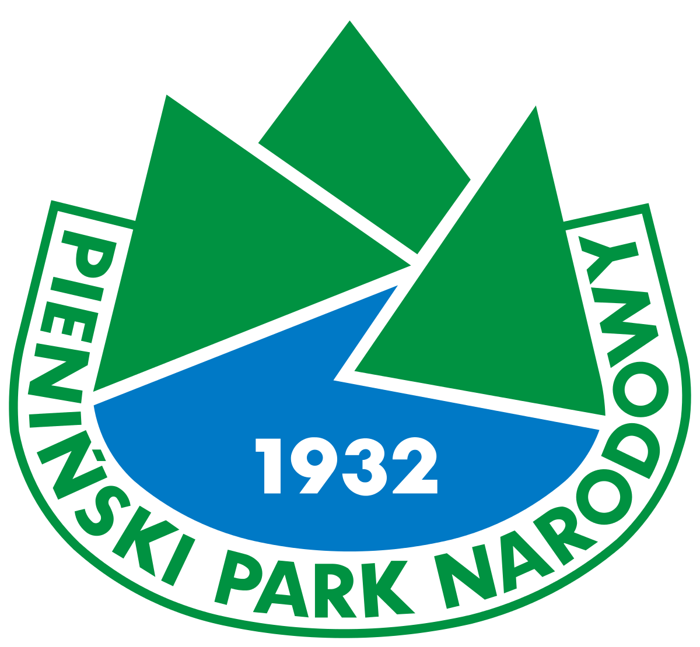

Pieniński Park Narodowy
Jest to najstarszym parkiem narodowym w Polsce. Został utworzony 1 czerwca 1932. Swoją powierzchnią obejmuje dzisiaj 23,46 km². Znajduje się w województwie małopolskim, tuż przy granicy ze Słowacją. W jego godle widnieje najpiękniejszy tutejszy szczyt, jakim są Trzy Korony, choć nie są one najwyższym szczytem Pienin. Turystom udostępniono 35 km szlaków, a sam park ma najwyższy wskaźnik odwiedzin w przeliczeniu na 1ha powierzchni.
Oprócz turystów można tutaj spotkać również dziki, jelenie, borsuki, rysie oraz liczne grono nietoperzy. Pienińskie łąki słyną z różnorodności motyli, których w Pieninach naliczono ok. 1600 gatunków., w tym ten najsłynniejszy – niepylak apollo. Park zajmuje najcenniejsze pod kątek krajoznawczym fragmenty Pienin Właściwych – Masyw Trzech Koron, Pieniny Czorsztyńskie, Pieninki i Przełom Dunajca.